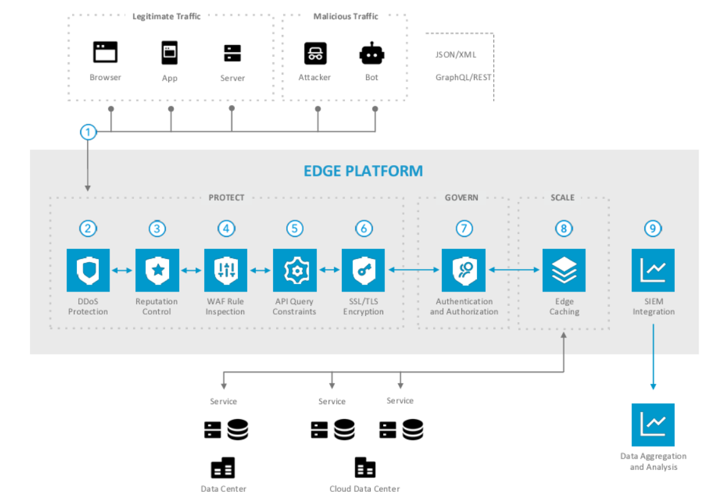

Akamai Cybersecurity Service Architecture
Akamai’s cybersecurity services protect websites, applications, and APIs from threats like DDoS attacks, bots, and vulnerabilities by leveraging its edge network and advanced threat intelligence.
Step-by-Step Process:

- Step 1: User Sends a Request to a Website or API
A user (e.g., a shopper accessing an e-commerce site or an API call from a mobile app) sends a request to a website or API endpoint. This request reaches Akamai’s Intelligent Edge Platform, which includes over 365,000 edge servers across 4,100+ points of presence (PoPs) in 135 countries, strategically placed to intercept traffic close to the user. - Step 2: Request Inspection with Threat Intelligence
Akamai’s edge servers analyze the incoming request using its Threat Intelligence System, which is powered by real-time data from billions of daily requests across Akamai’s global network. The system identifies potential threats (e.g., malicious IPs, bot signatures, or unusual traffic patterns) by cross-referencing the request with an updated threat database that tracks known attack vectors, botnets, and compromised IPs. This enables rapid detection of risks like SQL injection, cross-site scripting (XSS), or unauthorized API access attempts. - Step 3: Web & API Protection with App & API Protector
Akamai’s App & API Protector, a cloud-native Web Application and API Protection (WAAP) solution, applies multiple layers of defense at the edge server:
- Web Application Firewall (WAF): Filters requests to block common exploits like SQL injection, XSS, and file inclusion attacks by matching request patterns against predefined and custom rules.
- API Security: Validates API requests by checking for proper authentication (e.g., OAuth tokens), rate-limiting excessive calls (to prevent abuse), and detecting malformed or shadow APIs (undocumented endpoints that could be exploited).
- Bot Management: Uses behavioral analysis and fingerprinting to distinguish between legitimate users, good bots (e.g., search engine crawlers), and malicious bots (e.g., credential stuffers). It employs techniques like JavaScript challenges and device fingerprinting to block bad bots while allowing legitimate traffic.
- Client Reputation: Assigns risk scores to IPs based on historical behavior, blocking high-risk IPs proactively to prevent attacks like scraping or fraud.
- Step 4: DDoS Mitigation with Scrubbing Centers
If the Threat Intelligence System detects a Distributed Denial-of-Service (DDoS) attack (e.g., a flood of requests overwhelming a website during a product launch), Akamai routes the traffic to its Scrubbing Centers. These are high-capacity facilities designed to filter malicious traffic. The scrubbing process involves:
- Traffic Analysis: Identifies abnormal patterns (e.g., UDP floods, SYN floods) using machine learning models trained on attack signatures.
- Traffic Filtering: Drops malicious packets while allowing legitimate traffic to pass through, using techniques like rate limiting, geo-blocking (restricting traffic from suspicious regions), and protocol validation (ensuring packets conform to expected standards).
- Traffic Redirection: Clean traffic is sent back to the edge server for delivery to the origin server or directly to the user, ensuring uninterrupted service.
- Step 5: Secure Request Forwarding to Origin Server
If the request is legitimate and requires data from the Origin Server (e.g., for dynamic content like a user’s account balance), the edge server forwards it securely using Akamai’s Intelligent Routing and Overlay Network. This network optimizes the path to avoid internet congestion and encrypts data in transit with TLS/SSL to prevent interception. The edge server also validates the response from the Origin Server to ensure it’s not compromised (e.g., checking for injected malicious scripts). - Step 6: Response Delivered to User
The edge server delivers the response (e.g., a webpage or API data) to the user with security enhancements like HTTP Strict Transport Security (HSTS) to enforce secure connections and Content Security Policy (CSP) headers to prevent unauthorized scripts. This ensures a fast, secure, and reliable experience for the user, even during active threats.
All Components:
- Intelligent Edge Platform: Network of over 365,000+ edge servers in 4,100+ locations across 135 countries for request interception.
- Threat Intelligence System: Real-time threat detection using data from billions of daily requests.
- Threat Database: Tracks malicious IPs, botnets, and attack vectors for rapid threat identification.
- App & API Protector (WAAP): Provides WAF, API security, bot management, and client reputation.
- Web Application Firewall (WAF): Blocks exploits like SQL injection and XSS with rule-based filtering.
- API Security: Validates API requests for authentication, rate limits, and endpoint integrity.
- Bot Management: Uses behavioral analysis and fingerprinting to block malicious bots.
- Client Reputation: Assigns risk scores to IPs based on historical behavior.
- Scrubbing Centers: High-capacity facilities for DDoS traffic filtering.
- Traffic Analysis & Filtering: Identifies and drops malicious DDoS traffic using ML and rule-based techniques.
- Intelligent Routing & Overlay Network: Optimizes and secures request forwarding to origin servers.
- TLS/SSL Encryption: Secures data in transit between edge servers, origin servers, and users.
- HTTP Strict Transport Security (HSTS): Enforces secure connections for users.
- Content Security Policy (CSP): Prevents unauthorized scripts in responses.